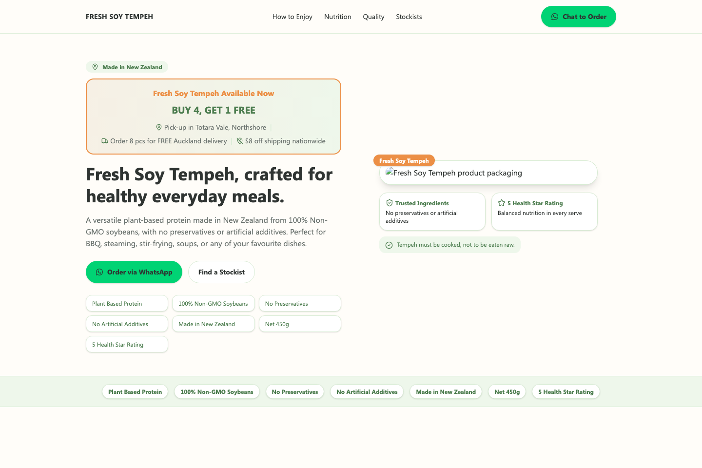

Real work
Fresh Soy Tempeh
A React product landing page built around ordering intent, product trust, stockist discovery, WhatsApp conversion paths, and campaign tracking.
React + Vite
WhatsApp ordering
Meta Pixel/CAPI